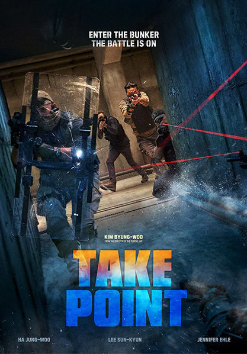
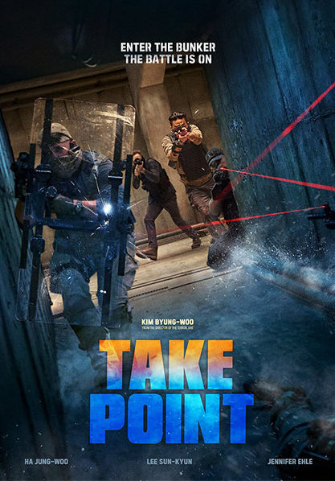

Comedia
Ni en tus sueños
El periodista Fred Flarsky se reencuentra con su amor de infancia, Charlotte Field, ahora una de las mujeres más influyentes del mundo. Mientras se prepara para postularse para la presidencia, Charlotte contrata a Fred como escritor y surgen chispas entre ellos.
No manches Frida 2
Cuando Zequi está por casarse con el amor de su vida, la adorable Lucy, los nervios antes de la boda ocasionan un lío enorme y Lucy cancela la boda. Entonces Zequi intenta recuperar el amor de Lucy llevando al equipo escolar a la victoria.
Pequeña... otra vez
Una mujer se transforma en una versión mucho más joven de ella misma cuando las presiones de la edad adulta son demasiado para soportarlas.